Math 612 - Problem set #2
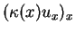
with at least second order spatial accuracy with a fixed mesh size.
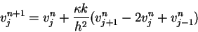
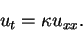
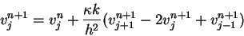
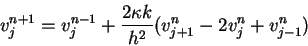
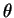
finite difference scheme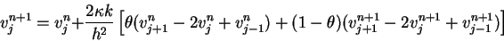
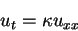
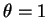
, this method is ordinary explicit differencing, and when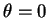
, this is ordinary implicit differencing. Hint: You may need to use the Cauchy-Schwartz inequality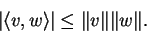